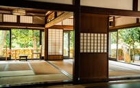
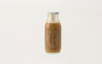
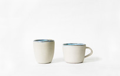

所有文章
旅行动态、精品旅行推送

从海边散步开始的白保早餐
白保的海，因為有世上少有的珊瑚礁聚集在近海而遠近馳名。若想在岸邊散步，建議在太陽還沒高掛的時候，可以看到大大小小的珊瑚礁岩以及鷸鳥、鴴鳥。
2017-02-08 18:05体验

可以喝的年糕!? 長壽島的健康饮品
用玄米及黑糖做成的玄米乳，是眾所皆知的石垣島健康飲品。
2017-02-08 18:02

秘藏川平湾海色的杯子
神野泰子小姐的工房位在石垣島西北部山原，可以一望川平灣到平保崎的無際海景。
2017-02-08 18:01